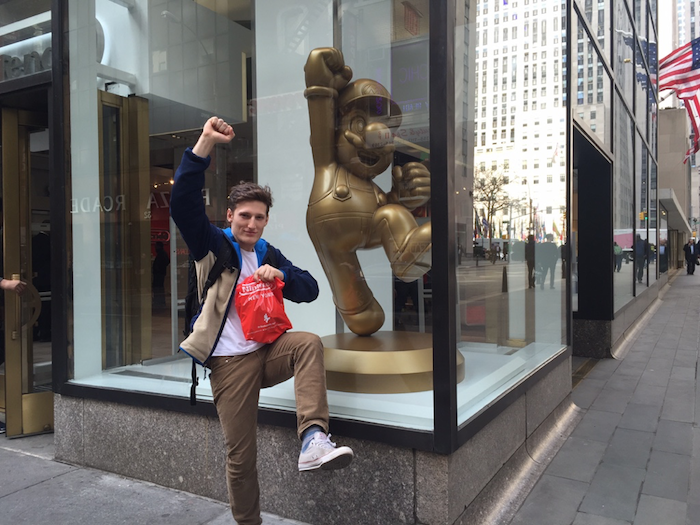

Resume and Miscellaneous
Resume and Miscellaneous
Click here: Resume PDF
I tutored undergraduate students in intermediate micro/macroeconomics and econometrics for two years at USC.
I helped revamp the USC Unruh Institute’s social media presence on Facebook, Twitter, and Instagram by implementing a new social media policy that streamlined content creation through a Google Sheets calendar, Google Drive content folders, and automatic posting applications. On Facebook we increased followership by 50% and total post reach by 100% over the course of four months compared to the previous four month totals.
I was a Presidential, Gateway Internship, and Beryl J. McManus Memorial Endowed scholar at USC. I also graduated magna cum laude and received the Order of Troy upon graduation.
I am a social sciences enthusiast who has dipped his toe in the academic research space, having written a graduate school political science research proposal on the effectiveness of Dodd-Frank resolution plan requirements and original research on the effects of decreasing levels of trust in institutions on the the trading volume of bitcoin.
 I love snowboarding and skiing the Sierra Nevadas, Rocky Mountains, and Coast Range with my friends and family when I have a free weekend.
{kind=link}
{kind=link}
{kind=link}
I enjoy working with youth as a mentor. I’ve volunteered as part of the reading pal program at my local hometown library, worked as a summer camp counselor, and taught underprivileged youth in Los Angeles legal basics as part of the Street Law Clinic.
I am constantly searching for the newest sounds of house music.
I am a huge fan of Nintendo and all things video games if you couldn't tell from the photo.